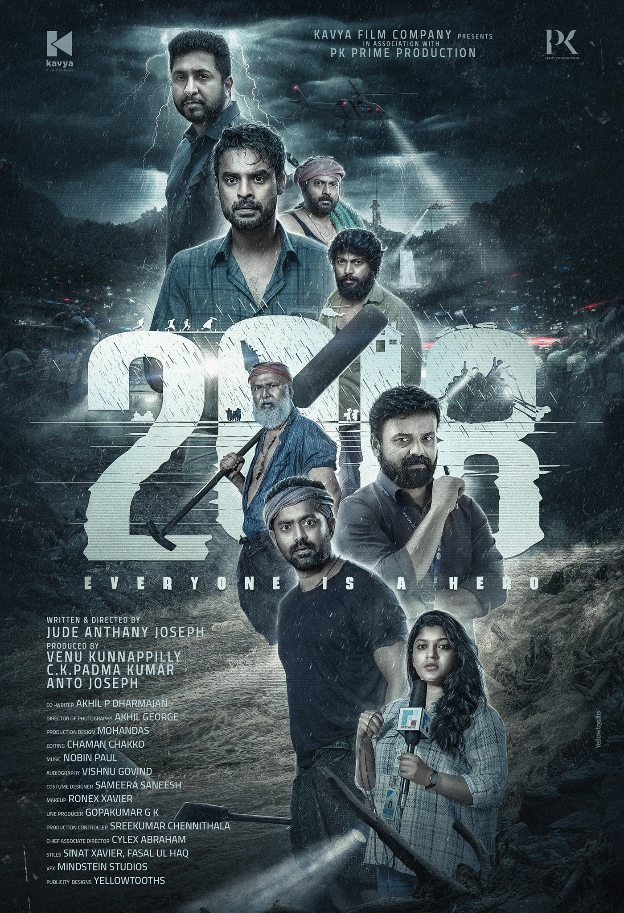
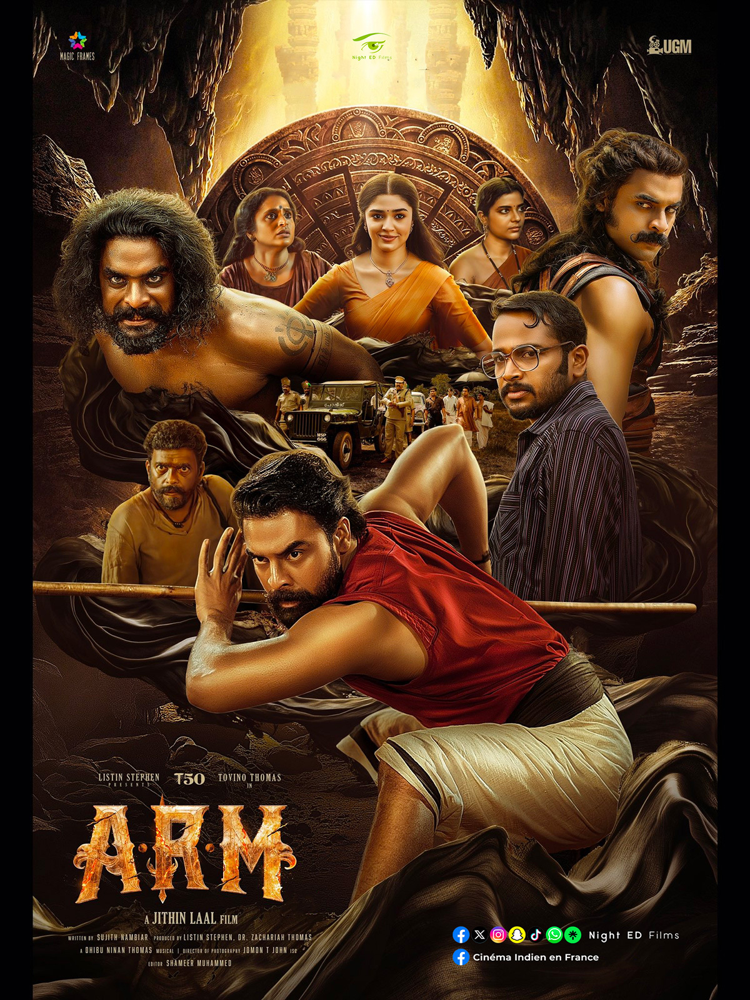
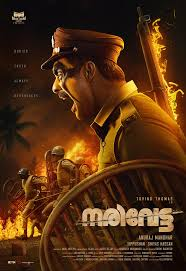

SPOTSTAR - TOVINO THOMAS
Tovino Thomas is a talented actor and film producer from Kerala, known for his powerful screen presence and versatility. Born on January 21, 1989, in Irinjalakuda, he started his career as a software engineer before transitioning to the film industry. His debut film was Prabhuvinte Makkal, but he gained wider attention with his role in ABCD. Over time, he earned recognition for both supporting and lead roles in critically acclaimed films. Movies like Ennu Ninte Moideen, Guppy, Mayanadhi, and Theevandi showcased his ability to handle diverse characters with ease. One of his most notable performances came in the superhero film Minnal Murali, which brought him nationwide fame. Tovino is also known for his work in action thrillers like Forensic and emotional dramas like Luca. He started his own production company to support fresh ideas and meaningful storytelling. Despite his growing fame, Tovino remains grounded and is admired for his discipline and dedication. He often chooses roles that break stereotypes and challenge his skills as an actor. With his consistent performances and humble nature, he has earned a strong fan base. Tovino continues to be a leading figure in contemporary Malayalam cinema.
POPULAR FILMS




